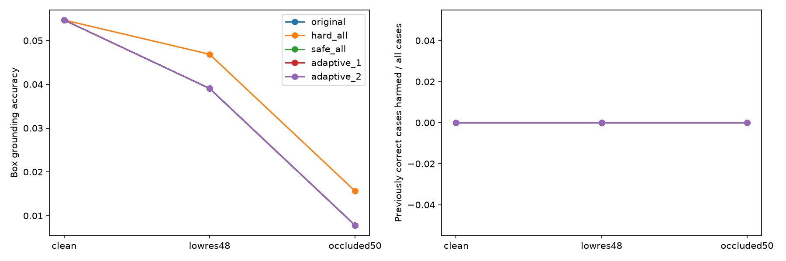

原始 GQA 图像及图结构保持不变。使用原始颜色属性和左右关系构造单独诊断问题；不是官方 GQA 问答成绩，也没有像素掩码真值，以下只报告对象框定位。主干为冻结的 Marigold，三个候选均来自生成式掩码。
512训练图像、64校准图像、128测试图像；颜色小模块3种子，空间检查使用真实参照物候选框，因此仍有 oracle 输入。自适应顺序为固定启发式，尚非训练出来的新策略。遮挡和降分辨率副本与原图分开保存，不修改原始标签。
正确率阈值为box IoU≥0.5。纠正/误伤均以全部样本为分母；完整逐样本结果可另行计算条件误伤率。实际延迟只测固定16张清晰图像的检查阶段，包含重新提取颜色特征，排除共享生成前端和预览，不声称整体系统已加速。
| Variant | Policy | Accuracy | Correction | Harm | Calls |
|---|---|---|---|---|---|
| clean | original | 0.055 | 0.000 | 0.000 | 0.00 |
| clean | hard_all | 0.055 | 0.000 | 0.000 | 2.00 |
| clean | safe_all | 0.055 | 0.000 | 0.000 | 2.00 |
| clean | color_first_1 | 0.055 | 0.000 | 0.000 | 1.00 |
| clean | color_first_2 | 0.055 | 0.000 | 0.000 | 1.96 |
| clean | relation_first_1 | 0.055 | 0.000 | 0.000 | 1.00 |
| clean | relation_first_2 | 0.055 | 0.000 | 0.000 | 1.95 |
| clean | random_1 | 0.055 | 0.000 | 0.000 | 1.00 |
| clean | random_2 | 0.055 | 0.000 | 0.000 | 1.95 |
| clean | adaptive_1 | 0.055 | 0.000 | 0.000 | 1.00 |
| clean | adaptive_2 | 0.055 | 0.000 | 0.000 | 1.95 |
| lowres48 | original | 0.039 | 0.000 | 0.000 | 0.00 |
| lowres48 | hard_all | 0.047 | 0.008 | 0.000 | 2.00 |
| lowres48 | safe_all | 0.039 | 0.000 | 0.000 | 2.00 |
| lowres48 | color_first_1 | 0.039 | 0.000 | 0.000 | 1.00 |
| lowres48 | color_first_2 | 0.039 | 0.000 | 0.000 | 1.96 |
| lowres48 | relation_first_1 | 0.039 | 0.000 | 0.000 | 1.00 |
| lowres48 | relation_first_2 | 0.039 | 0.000 | 0.000 | 1.98 |
| lowres48 | random_1 | 0.039 | 0.000 | 0.000 | 1.00 |
| lowres48 | random_2 | 0.039 | 0.000 | 0.000 | 1.97 |
| lowres48 | adaptive_1 | 0.039 | 0.000 | 0.000 | 1.00 |
| lowres48 | adaptive_2 | 0.039 | 0.000 | 0.000 | 1.97 |
| occluded50 | original | 0.008 | 0.000 | 0.000 | 0.00 |
| occluded50 | hard_all | 0.016 | 0.008 | 0.000 | 2.00 |
| occluded50 | safe_all | 0.008 | 0.000 | 0.000 | 2.00 |
| occluded50 | color_first_1 | 0.008 | 0.000 | 0.000 | 1.00 |
| occluded50 | color_first_2 | 0.008 | 0.000 | 0.000 | 1.96 |
| occluded50 | relation_first_1 | 0.008 | 0.000 | 0.000 | 1.00 |
| occluded50 | relation_first_2 | 0.008 | 0.000 | 0.000 | 1.95 |
| occluded50 | random_1 | 0.008 | 0.000 | 0.000 | 1.00 |
| occluded50 | random_2 | 0.008 | 0.000 | 0.000 | 1.96 |
| occluded50 | adaptive_1 | 0.008 | 0.000 | 0.000 | 1.00 |
| occluded50 | adaptive_2 | 0.008 | 0.000 | 0.000 | 1.96 |
